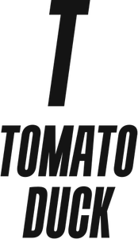

From the smallest booth at a trade show to events occupying an entire convention center Tomato Duck is your trusted IT partner to ensure event success. Our team has worked with ESL FACEIT Group, DreamHack, Loadout Entertainment, and others to advise, consult, and make them successful.
Shoot us an email at sales@tomatoduck.gg and lets talk about how we can make your live event a success